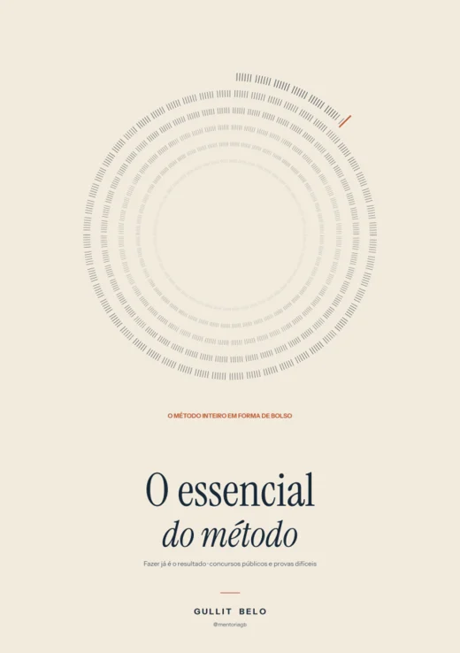

Livros de estudo para concursos e para a educação dos filhos
Sou servidor no TRT, fui aprovado em quase vinte concursos em tribunais, no Ministério Público e na AGU, e tenho quatro filhos. Aqui estão os materiais que escrevi, cada um com preço e amostra grátis.
-

O essencial do método
O método da mentoria em 81 páginas, para aplicar a partir de hoje.
R$ 47 em PDF e EPUB
-

Fazer já é o resultado
Quatro volumes: edital e banca, ciclo, revisão, sono, trilhas por prazo e o dia da prova.
R$ 47 por volume, R$ 147 a série
-

TRT 8 dia a dia
Um dia de estudo por vez, do edital à discursiva. Para Analista e Oficial ou para Técnico.
R$ 97 por cargo até 5 de novembro
Prova em 17 de janeiro de 2027.
-

Jurisprudência para o TRT 8ª Região
Súmulas, OJs e teses do TST, do STF e do STJ que a FCC cobra, por disciplina.
R$ 97, ou R$ 67 com o TRT 8 dia a dia
-

Filho meu
Caligrafia, tabuada e leitura com Provérbios. A família à mesa, cada filho no seu nível.
R$ 139 os três livros, preço de fundador
Por frente
Comece sem pagar
Mentoria individual
Para montar o seu ciclo, a sua trilha e a sua semana comigo. Conte no Direct qual é a sua prova e em que ponto você está.
Falar no Direct